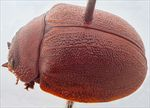
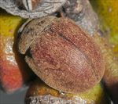
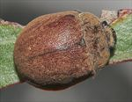
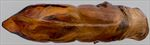
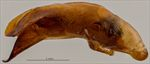
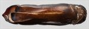
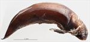
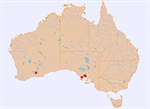

Click on images to enlarge
{kind=link}

Male, Mangalo, South Australia
{kind=link}

Male, Norseman, Western Australia
{kind=link}

Male, Norseman, Western Australia
{kind=link}

Aedeagus, dorsal view (Mangalo, South Australia)
{kind=link}

Aedeagus, lateral view (Mangalo, South Australia)
{kind=link}

Aedeagus, dorsal view (Norseman, Western Australia)
{kind=link}

Aedeagus, lateral view (Norseman, Western Australia)
{kind=link}

Distribution
Name
Trachymela sp. Ta91
Reference specimen
2011-057, Mangalo, South Australia.
Adult Description
Length: ♂ 8.8–10.0 mm (n=4), ♀ 9.7–9.8 mm (n=2).
Colouration:
- Head: mid- to reddish-brown, clypeus, particularly adjacent to fronto-clypeal suture often darker but not black, labrum straw-brown, mandibles brown with black tips; antennomeres 1–3 straw-brown, 4–11 concolorous or slightly darker brown, individual antennomeres sometimes with anterior edge darker.
- Pronotum: brown, concolorous with head, sometimes with some vaguely darker maculae, most commonly along the anterior margin adjacent to the head, lateral edge partially or fully infuscated black.
- Scutellum: brown, concolorous with adjacent area of pronotum, broadly edged in a darker brown shade.
- Elytra: brown, concolorous with or fractionally paler than disc of pronotum, punctures fractionally to considerably darker than interstices, humeral callus concolorous with surrounds.
- Venter & Legs: venter mid-brown, with darker areas generally towards midline of thoracic segments, legs concolorous or fractionally darker, inside surface of elytral epipleura brown.
- Cuticular Wax: light-brown and somewhat unevenly distributed, with a thick coating on head and the lateral margins of pronotum; on the elytra, it is distributed more sparsely though fairly evenly, with a few very small and quite inconspicuous white, dot-like patches scattered irregularly (rarely roughly aligned in rows) over disc.
Morphology:
- Head: body quite evenly rounded and almost hemispherical (H/BL: ♂ 0.43–0.46, ♀ 0.47–0.50), highest point a little in front of middle of elytral margin; punctures moderately sized (pd ≈ 2–2.5× ef) and quite evenly and densely distributed. Antennae moderately long (AL/BL: ♂ 40–44%, ♀ 37–39%), A4 ≈ A3, filiform.
- Pronotum: almost evenly curved transversely, foveal depression absent or very weak with foveal elevation absent, puncturation clearly impressed, similar in size and density as those on head, sometimes slightly uneven in size, evenly distributed and becoming much coarser from about foveal area towards lateral margin. Front margins join lateral margins in a smoothly rounded right-angle, with lateral margin initially almost straight for about 25% of length, then curving smoothly and gradually towards the much thicker rear margin.
- Scutellum: surface quite uneven, unpunctured or with a number of coarse but shallow punctures.
- Elytra: surface evenly curved, punctures distinct in anterior two-thirds, less so in posterior third where they become lost in the closely-spaced granular interstices, relatively evenly distributed, only very few smaller punctures scattered on the interstices, interstices raised but uniform in thickness, never expanding to form verrucae but some (particularly VR1, VR3 and VR5) in the form of thin, very slightly elevated ridges, surface discontinuous under humeral callus, though sometimes only slightly. Vertical extension of epipleura moderate (HCE/PW = 0.33–0.34).
- Venter: prosternal process narrow anteriorly or almost parallel-sided, closed anteriorly, short setae present sparsely over prosternal process and mesoventrite, one to several setae on anterior and median trochanter, one on posterior trochanter; front edge of metaventrite beveled, truncate; inner edge of epipleura prominently setose, the setae extending forward to at least level of first abdominal segment, sometimes as far as level with hind coxae.
Male Genitalia (Aedeagus):
- Dimensions: quite long, round in cross-section and thick (LPE/BL = 36–39%).
- Dorsal view: shaft almost parallel-sided from basal sulcus to about 75% of distance to apex with sides usually having 3 narrow indentations, sides converge gradually towards apex in almost a straight line to form a long triangular spatula, dorsal surface smoothly curved with a well-defined and long dorso-median channel, dorsolateral channels relatively short and along lateral margins, dorsal ostial processes large with anterior edges oblique, the most anterior point closer to centre line than lateral margin, ostial opening large, tip strongly protruding.
- Lateral view: shaft curved slightly just anterior to basal sulcus, then almost straight to about 25% from apex where ventral surface curves through almost 45° and its thickness decreases towards apex, tip prominent and deflexed.
Immature Stages
Unknown.
Similar species
- Ta76: similar in shape and size to Ta91; however, it tends to be considerably darker in colouration and the reticulation of its elytral surface is less even with verruca-like expanded and very slightly elevated interstices scattered over surface of disc. The elytral suture of Ta76 is black, as are the inner surfaces of the elytral epipleura.
- Ta78: dorsal colouring of this species is very similar to that of Ta91, but it can easily be distinguished by the presence of longitudinal rows of small but prominent, black verrucae on the elytra.
- Ta124: though slightly darker in colouration dorsally, the sculpture of the elytral disc is very similar to that of Ta91. They can be distinguished by the black colour of the inside surface of the elytral epipleura of Ta124.
Notes
- Taxonomy: This species is one of a group of relatively large species (the alta-group) found in the mallee regions of southern Australia. This is very possibly the same species as T. ingloria (Weise). Ta91 is distinguished by the complete lack of verrucae and the almost uniformly mid-brown dorsal surface.
- Host Associations: Recorded from unspecified mallee eucalypt species on the Eyre Peninsula, and the mallet species, Eucalyptus diptera, in Western Australia.
- Morphological Variation: Specimen [PGK/5180] from Cowell, S.A., is effectively identical to other specimens of Ta91 but its aedeagus lacks the lateral constrictions that are present in other specimens examined. The spatula of a specimen from Norseman in Western Australia is noticeably broader than that of the two specimens examined from Eastern Australia and possibly indicates specific distinction.
Copyright © 2026. All rights reserved.